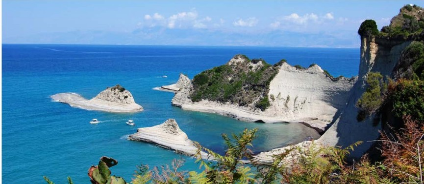

There are many planned activities at all the cliff sites. Some are scheduled daily, weekly, monthly and yearly. These activities are not however run by the state park and recreational department. They are operated and managed by private vendors but are partners with the state department. Therefore, for schedule inquiries or information, please contact them directly. For a list of activities, please refer to the table below:
| Activity | West Cliff | North Cliff | East Cliff | South Cliff |
|---|---|---|---|---|
| Hiking | College Hikes | Family Fun | Treasure Trails | Canyon Explorer |
| Kayak | Western Kayak Meetup | Not Available | Youth Kayaking | Kayak Down |
| Skydiving | Seacliff Diving | Sky is the limit | Not Available | Sky Diving for Beginners |
| Biking | Bicycle for One | Not Available | Bike Meetup Group | Not Available |
| Camping | Youth Camp | Rent a Tent | Campground Adventure | Sunset Camping |
Partner 1 Image
Partner 2 Image
Partner 3 Image
Partner 4 Image
Partner 5 Image
Partner 6 Image